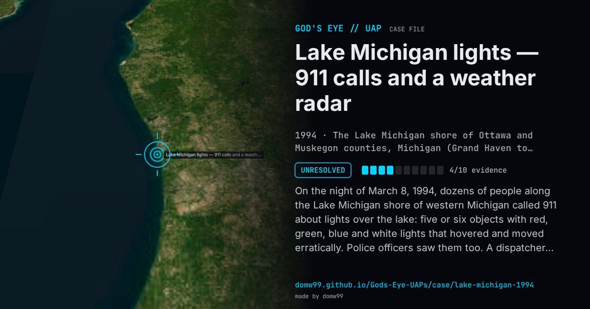

Lake Michigan lights — 911 calls and a weather radar

On the night of March 8, 1994, dozens of people along the Lake Michigan shore of western Michigan called 911 about lights over the lake: five or six objects with red, green, blue and white lights that hovered and moved erratically. Police officers saw them too. A dispatcher called the National Weather Service office at Muskegon County Airport, and the meteorologist on duty, Jack Bushong, turned the office’s WSR-74C weather radar on the area and saw several returns where none should be, which he said moved fast and changed direction; he reported it to the National UFO Reporting Center. Days later the Weather Service played the radar down, saying it was built to see rain, not aircraft. Over the following weeks more than 300 people in 42 Michigan counties reported sightings; MUFON investigators interviewed dozens and found no explanation. Bushong kept his account for decades, and the case stays one of the better-documented police and radar cases of the 1990s.
What was seen
Shape: Five or six round or cylindrical objects with red, green, blue and white lights, like flickering Christmas lights
Witnesses: Dozens of residents who called 911, police officers, and the meteorologist on duty at the Muskegon weather office
Duration: Hours
Sources
- MLive — the 1994 Lake Michigan UFO sightings
- WWMT — the retired meteorologist’s account of the 1994 sightings
- Wikipedia — 1994 Michigan UFO event
Browse
- United States
- 1990s
- Unresolved
- Radar-visual cases
- Many independent witnesses
- Radar tracking
- Police witnesses
- Lights and fireballs
- Spheres and orbs
- Cylinders and cigar shapes